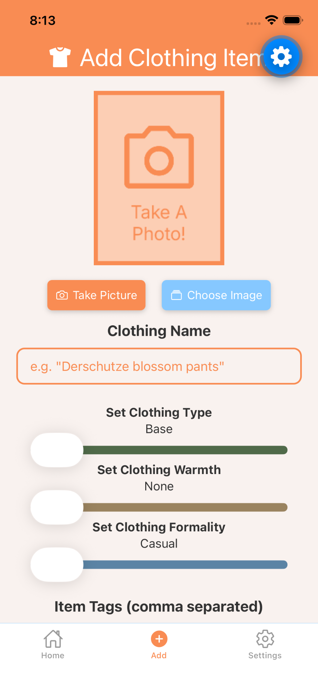
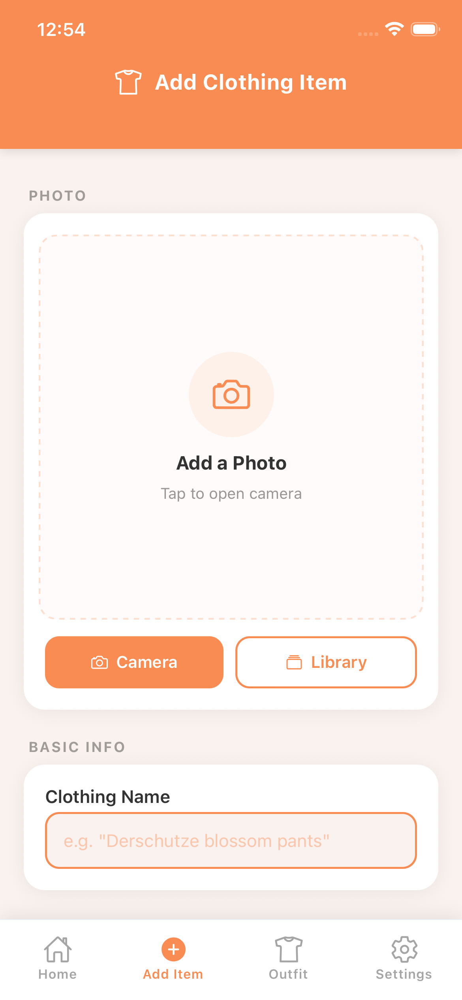
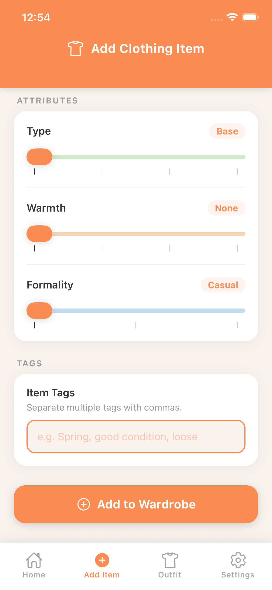
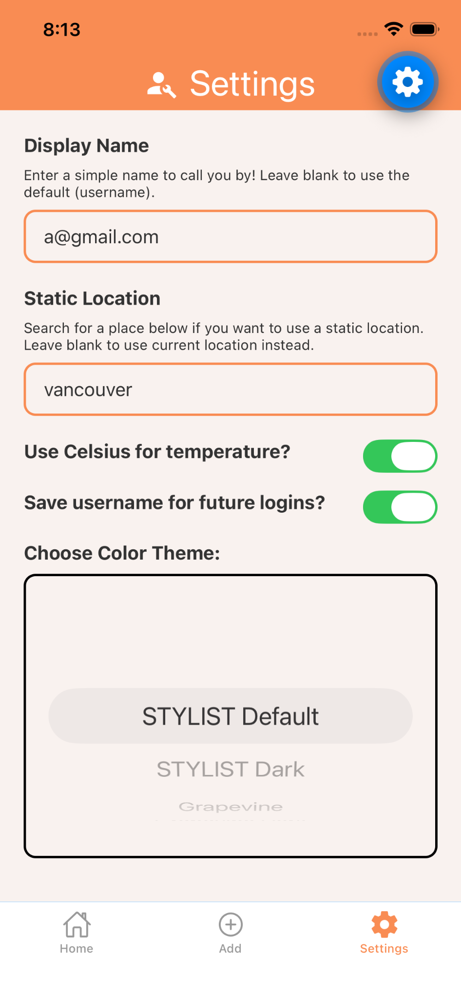
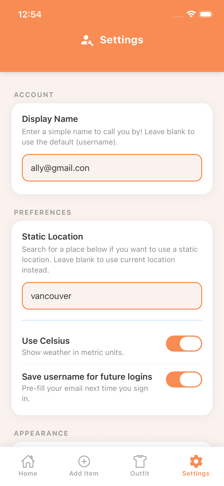
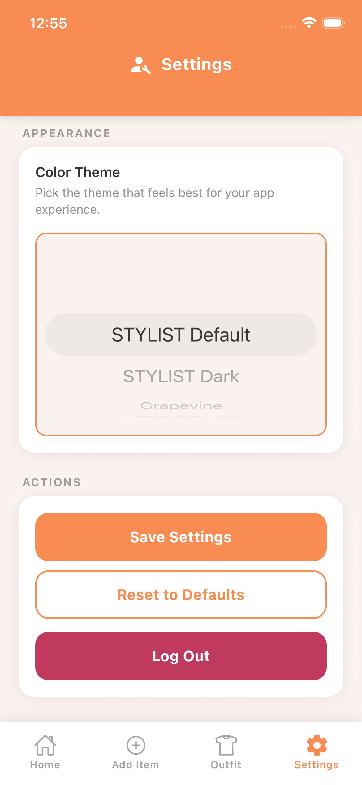
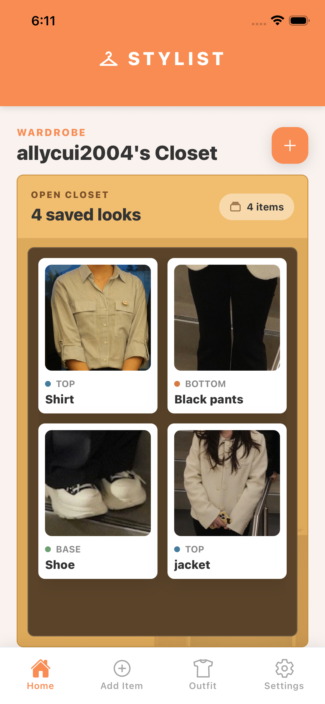
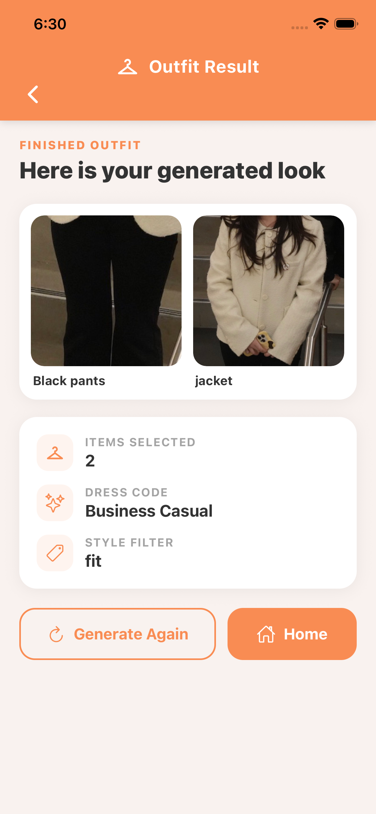

React Native
Frontend implementation and interface refinement
A mobile outfit-planning app that helps users make daily clothing decisions using wardrobe data, weather conditions, formality preferences, and personal style tags.
This is our app, Stylist. The purpose is to create kind of a mobile walking closet, and our target users are those with large wardrobes so that they can't physically catalog it all. And and maybe if you're like really busy, you can't put together outfit, or if the weather is super, you know, it's super dynamic in your area, you want something to kind of help keep up with that. This is where our app shines. And so, we're going to log in here using Firebase authentication. And first we're going to use a a wrong
sign up to show that we do in fact have the try catch blocks, but we're going to use an actual email now to really sign up and create this new account. So, now we're just going to log in with a testing account that we made. Populate it with some images already. So, as you can see, we're presented with the home page, and this has a couple of components here. First, we have the weather widget at the top. This one pulls from Expo location for coordinates if you granted location permission. Um
we also use Google weather API for weather, obviously. We have time zone API, and we have a geocoding API for that little address you see at the top. And then the main feature here is the user's closet, which has a collection of their clothing items in images. These photos are served from Firestore, so we store them using the URI, and then we pull them uh to display as image components, and they're tied to user ID as well. And so, now we're going to head over to the settings page, and you'll see we
have a variety of settings, uh many of which are stored using async storage, local storage on the device. Here, for example, static location, we're going to change the location to Toronto for the app to pull from. And of course, we have our display name as well. This one's actually stored within Firestore in order to authenticate it with the user. I'll call it Stylist. And yeah, you can see there are a lot of different settings here, the Celsius, saving username for future login, those
are both async. The color theme as well. And yeah, that's a local storage as well. You can save settings, you can reset to default or you can log out for, you know, Firestore um Firestore authentication. And now we're going to go to add item screen. And we did utilize Expo image picker. Um this allows the application to access the camera and media files and kind of upload them into our app. And you can see here we go straight into the file library. And all of these all of these fields that you're going to see, all these
attributes are um attached to the data object. I'm just going to go ahead and add this black tee for example. Oh yes, and the item tags there that you saw that is stored as an array. And so yeah, here in the closet we can kind of see click on the detail of these items. And yeah, you'll see the attributes that we put set in as well as the ability to close or uh delete item from our collection from our data collection in Firestore. I'll do that right now. So this is the section of the code where
um we utilize Firestore to insert items into the database. And so it kind of revolves around these use states of where the attributes are held and this corresponds with uh the UI element so the user can set those accordingly. Um you can see we did we did import Firestore as we should and also um one of the main features we have is utilizing the camera. And so one of the options here get camera image, it let it launches the image picker launch camera async and then these are kind of the options for
that as well as this is the this is the code for letting the user pick through the library, the media library. And there's options here. Yeah, so we have native camera and file system support. And this is where this is where the the item actually gets inserted into the collection and this in this function here that we kind of create an object with the attributes of the clothing. And then Yeah, and then we just kind of just add the doc to the images collection in our database for Firestore. And of course, you know, we have
statuses and navigations for if it's successful. We have the catch in case it's not. And then yeah, this this just a quick overview of the CSS. And HTML. So, let's switch over to the outfit generation page. And so, this is it's not a complicated algorithm. It's one Firestore query and then um some systematic application of array filters using JavaScript. And um this is for the most part this done completely on the device. And we're going to see we're going to make a casual outfit here.
And there you go. There's four clothing items right there. Um we actually we we don't necessarily pull the images, but we we store we we we generate an array a four-item array of photo IDs, image paths, and then we use those image paths to kind of tell the app which file to display and where. Uh you can see here on this page we do have the ability to set the outfit formality as well as uh the ability to input a tag. And of course, this aligns with the attributes of the clothes that we've set earlier.
And while formality is quite strict, the tag is for the most part a suggestion more than like um direct control over what items show up. Here's the code for the main function in our application, which of course is generating outfits. It uses both Firestore and Google Maps API data and Google Weather. And so, here we'll have some use states that we use to kind of iterate through to kind of build our outfit array. And here, yes, we used a Google Maps API key, as I stated. Import that theme. Update location permission.
Since it's a different screen, we do have to ask for location permissions again, if possible. Um and either way uh Like user can choose to use the saved settings from async storage. Yeah, and here we um start pulling from the Maps API to fetch uh the coordinates of where the user is. Here's a helper function to for temperature and then return a warm value to use in the clothing algorithm. And this is the actual algorithm here. As you can see, we start with a null array, and each Some of these values, it doesn't have to
be all of them, but some of them may be replaced by a string or a photo ID, and then that can be used to pull the image path from the database. And here, here's the query for every every item that belongs to the user. And then, as you can kind of see, we just start filtering it out systematically based on the attributes of what the user kind of needs in that moment, which uh primarily is formality and the warm value, as we stated. Oh, yeah, and here we fetch the longitude latitude from an address.
Here's Yep, here's the call to the REST API geocoding. Fetching current temperature, this is using uh the Weather API, another REST API. And use effects are kind of like guide the some of the components. Yeah, that's pretty much it. And then here's the HTML, the CSS.
A clothing-management and outfit-recommendation app where users can add clothing items, organize a digital wardrobe, view weather information, and generate outfit suggestions.
STYLIST was designed to reduce the everyday mental effort of choosing an outfit. Choosing what to wear can require users to consider weather, formality, available clothing, and personal style all at once. The app combines wardrobe management, local weather information, formality preferences, and personal tags to help users make a more confident decision.
STYLIST was built as a team project for IAT 359: Mobile Computing.
UI/UX design, frontend implementation, interface refinement, and improving visual consistency across the app, especially through the Add Item and Settings experiences.
The Add Item flow required users to enter several types of information at once. In the earlier interface these controls appeared together with limited hierarchy: the screen was functional, but visually dense and difficult to scan.
Users needed to understand where to start, which decisions belonged together, and what to do next, without treating the screen as one long form.

The early approach showed all essential inputs on one long screen so users could finish without navigating multiple pages. But putting everything together made the experience feel crowded, with little guidance about where to begin or how photo selection, item details, attributes, and tags related to one another.


The revised Add Item flow separates Photo, Basic Information, Attributes, and Tags into distinct sections, reducing visual density and giving users a clearer starting point.
Separate the flow into meaningful sections. Photo, Basic Information, Attributes, and Tags each became their own grouping.
Use labels and card groupings. Clarify what information belongs together at a glance.
Apply deliberate spacing between decisions, and repeat control styles for sliders, buttons, text inputs, and tags.
Create a clearer progression from identifying an item to describing its properties.
The goal was to apply the same principles of grouping, hierarchy, and consistency beyond Add Item. The earlier Settings screen placed display name, location, toggles, theme selection, save and reset controls, and logout in one long continuous form. Each control worked, but the page didn't clearly distinguish account information, preferences, appearance, and actions.



The revised Settings experience organizes controls into Account, Preferences, Appearance, and Actions, helping users understand what each setting affects and where to find it.
Group controls into Account, Preferences, Appearance, and Actions using card-based sections to separate related controls.
Improve spacing and label hierarchy so the page reads in a clear order.
Make inputs, toggles, buttons, and theme controls visually consistent with the rest of the app, so users can scan more quickly.
Alongside the visual refinement, I implemented settings-related interactions in React Native, including persistent preferences such as temperature units, location inputs, and display settings. This helped the interface feel dependable across sessions while supporting a consistent experience across the app.
Frontend implementation and interface refinement
Persistent user preferences
Wardrobe and account-linked data
The final design made the app easier to scan and more visually coherent across major screens. Add Item became easier to begin and complete; Settings became easier to scan and understand. Repeated cards, labels, controls, spacing, and navigation patterns made the app feel like one product, better connecting wardrobe management, weather-aware recommendations, and user preferences.


This project reinforced that usability often depends more on how information is grouped, sequenced, and labeled than on visual polish alone. STYLIST reflects my approach to interaction design: turning complex systems into interactions that feel easier to understand, navigate, and enjoy.